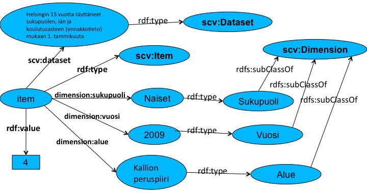

SCOVO is a vocabulary for representing statistical data on the Web. Semantic.hri.fi uses SCOVO for representing statistics of Helsinki region. SCOVO datamodel, consists of Datasets containing statistical Items (statistical values). Semantics of each item is defined by linking it to subclasses of Dimension, e.g. Year or Area.
Semantic.hri.fi extends basic SCOVO model by creating dimension specific sup-properties for scv:dimension. This results in better indexing of data and thus faster queries. The method is described in chapter 2.3 in www.w3.org/egov/wiki/images/8/85/Isem2010-bandholtz.pdf.
Below is a picture of Item depicting number (4) of women of age range 15-24 with higher education in Kallion peruspiiri (area) in year 2009. For brevity only dimensions gender, year and area are shown.
Item queries can be formed using Facet search and then clicking "Show SPARQL". SPARQL allows constraints on values as well as result ordering.
NOTE: For readability PREFIX declarations are omitted from these example queries. As SPARQL test page prepends those default namespaces to hand-written queries, these examples can be copy-pasted directly into the query box.
NOTE: Semantic.hri.fi's SPARQL-interface requires that limit and offset to a query be given as HTTP-parameters instead of as part of a query itself. This limitation is because of an enforced maximum result size limit (100 000 rows). All data can be read programmatically by paging through the results using OFFSET along with limit.
NOTE: It is possible that overly complex queries take "too long" to finish. In most cases these queries can easily be broken into a series of smaller fast queries executed programmatically.
SELECT ?dimension ?dimensionValue ?dimensionValueName
WHERE {
?dimension rdfs:subClassOf scv:Dimension .
?dimensionValue rdf:type ?dimension ;
dc:title ?dimensionValueName .
}
SELECT ?area ?pred ?obj
WHERE {
?area rdf:type dimension:Alue;
?pred ?obj.
}
SELECT ?prefix str(?ns) as ?namespace
WHERE {
?ns meta:nsPrefix ?prefix .
}
SELECT ?dataset
WHERE {
?d rdf:type scv:Dataset ; dc:title ?dataset .
}
SELECT ?dataset ?item ?value ?dimension
WHERE {
?item dimension:alue alue:_091_301_Kallion_peruspiiri ;
dimension:vuosi vuosi:_2009 ;
scv:dataset ?dataset ;
?dimensionProperty ?dimension ;
rdf:value ?value .
?dimensionProperty rdfs:subPropertyOf scv:dimension .
}
ORDER BY ?dataset
As not all areas have a broader area, skos:broader is defined as an OPTIONAL element of the query.
SELECT ?areaParentName ?areaName ?value
WHERE {
?item rdf:type scv:Item;
rdf:value ?value;
dimension:vuosi vuosi:_2010;
dimension:väestön_määrä väestön_määrä:Henkilöitä_yhteensä;
dimension:alue ?area.
?area rdf:type dimension:Alue;
dc:title ?areaName.
OPTIONAL { ?area skos:broader ?areaParent. ?areaParent dc:title ?areaParentName .}
FILTER (?value >= 50000)
}
This sum-aggregate query sums the number of workplaces in sub industries into main industries. The industry classification hierarchy is encoded by skos:broader.
SELECT ?industry ?year sum(?val) as ?workplaces
WHERE {
?i dimension:yksikkö yksikkö:Henkilö ;
dimension:vuosi ?year .
FILTER ( ?year = vuosi:_2005 || ?year = vuosi:_2006 || ?year = vuosi:_2007 )
?i dimension:toimiala ?subIndustry .
?subIndustry skos:broader ?industry .
?i dimension:alue alue:_091_101_Vironniemen_peruspiiri .
?i rdf:value ?val . FILTER ( datatype(?val) = xsd:double )
}
GROUP BY ?industry ?year
This query combines two statistical values: 1) number of 0-6 year old children and 2) number of 7-12 year old children. The second part is marked as optional for better performance. Finally filtering is applied outside the graph patterns.
SELECT DISTINCT ?area ?young ?old
WHERE {
{
[ dimension:ikäryhmä ikäryhmä:_0-6-vuotiaat ;
dimension:vuosi vuosi:_2009 ;
scv:dataset ?dataset ;
dimension:alue ?area ;
rdf:value ?young ].
OPTIONAL {
[ dimension:ikäryhmä ikäryhmä:_7-12-vuotiaat ;
dimension:vuosi vuosi:_2009 ;
scv:dataset ?dataset ;
dimension:alue ?area ;
rdf:value ?old ] .
}
}
FILTER ( ?young > ?old ).
}
This query combines three statistical values: 1) average income, 2) number of working women and 3) number of workin men. For performance reasons statistics of working men and working woman are marked as optional, while the main query is for average income. As optional blocks are processed after filters, the filter for "more working women than men" needs to be outside the actual query.
Note, however, that while there are many optimizations in place, this query still takes around one minute to finish. Breaking the query in three parts and joining these programmatically would result in much better performance. Here is an example of joining SPARQL results using JavaScript. It also demonstrates JSONP usage for cross-domain usage.
SELECT ?areaName ?avgIncome ?workingWomen ?workingMen
WHERE {
{
[ rdf:value ?avgIncome;
dimension:alue ?area;
dimension:tuloluokka tuloluokka:Keskitulo;
dimension:vuosi vuosi:_2007
] .
FILTER ( ?avgIncome > 40000 )
OPTIONAL { ?area dc:title ?areaName } .
OPTIONAL {
[ dimension:alue ?area;
rdf:value ?workingWomen;
dimension:sukupuoli sukupuoli:Naiset;
dimension:vuosi vuosi:_2007;
dimension:ikä ikä:Työll__työvoima_yhteensä;
dimension:yksikkö yksikkö:Työssä_käyvä_henkilö
] .
} .
OPTIONAL {
[ dimension:alue ?area;
rdf:value ?workingMen;
dimension:sukupuoli sukupuoli:Miehet;
dimension:vuosi vuosi:_2007;
dimension:ikä ikä:Työll__työvoima_yhteensä;
dimension:yksikkö yksikkö:Työssä_käyvä_henkilö
] .
} .
}
FILTER ( ?workingWomen > ?workingMen )
}
SELECT ?alue ?fakta ?ennuste
WHERE {
{
?item rdf:value ?fakta;
dimension:alue ?alue ;
dimension:ikäryhmä ikäryhmä:Väestö_yhteensä;
dimension:vuosi vuosi:_2010.
OPTIONAL {
?item2 rdf:value ?ennuste;
dimension:alue ?alue ;
dimension:ikä ikä:Väestö_yhteensä;
dimension:vuosi vuosi:_2015 .
}
}
FILTER (?ennuste > ?fakta)
}